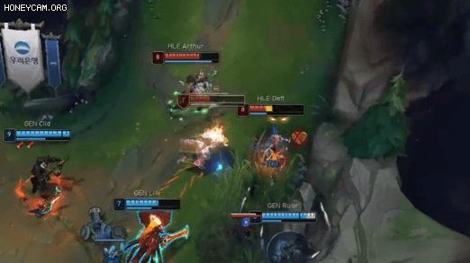

라인전
1. 무빙

혹시 이렇게 딜교를 하고 계시진 않으셨나요?
만 가지 발차기를 하는 사람보다 한 가지 발차기를 만 번 연습한 사람이 무섭다고 하죠.
이처럼 튼튼한 기본기는 모든 응용의 토대입니다.
무빙은 실력 상승의 아주 기본이라고 할 수 있겠죠.
그럼, 무빙이 왜 중요한지 아래 영상을 보시죠.

상대 그브 스킬을 미리 머릿속에 넣어둔 무빙입니다. 미리 그레이브즈의 궁을 피할 생각을 하고 있는거죠이처럼 롤은 상대방의 입장에서 생각해야 합니다. 상대방이 어떤 무빙을 칠지, 어떤 스킬을 언제 사용할지 미리 생각을 해야한다는 뜻이죠.